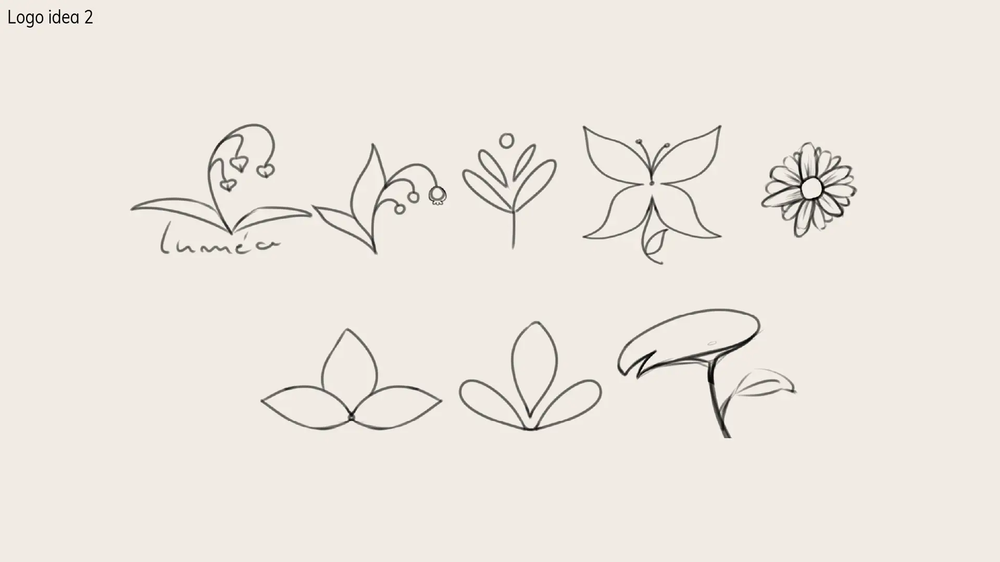
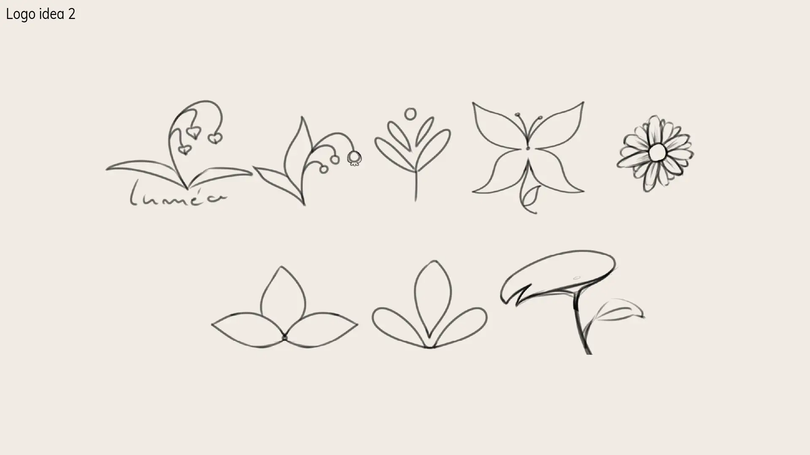

Luméa
Luméa is a conceptual brand celebrating wellness, delicacy, and connection with the senses. Inspired by nature, organic shapes, and a soft aesthetic, the project proposes a serene visual experience with a neutral color palette and refined typography. The goal is to convey lightness and authenticity, creating a balanced, elegant, and welcoming visual identity.
The Challenge and the Solution
Challenge: To create a visual identity from scratch. Once I decided the type of
brand I wanted to create, I worked so the brand would convey a delicate aura and aromas, while
also presenting a blend of digital (online store) and creativity.
Solution: Through a palette of soft, natural colors, shapes inspired by botany (such as the lily of the valley), and refined typography, a cohesive and memorable visual language was developed. The minimalist and organic logo reflects the brand’s values, while the layout and graphic elements reinforce the serene and elegant experience Luméa aims to provide.

Caption: An initial wireframe showing the interface structure and proposed navigation.
Design Process
The development of Luméa’s identity went through five main stages: research of references and target audience, definition of the visual concept, creation of proposals (logo, palette, and typography), application testing, and final refinement. Every decision was validated based on consistency with the brand values, legibility, and adaptability in different contexts.


 


Caption: Examples of design process stages, from moodboard and color tests to the final prototype.
Results and Learnings
The project resulted in a cohesive, versatile visual identity aligned with the brand’s values, receiving positive feedback for its aesthetic lightness and balance between natural and creative elements. The biggest lesson was the importance of translating emotions and sensations into clear visual elements, reinforcing design’s impact on brand positioning.